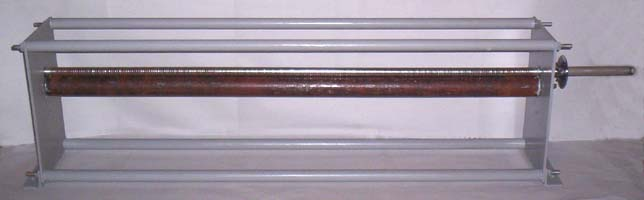

Валки для непрерывного многополюсного
одностороннего намагничивания листовых
магнитопластов (ширина до 1050 мм, толщина до 5 мм) с ферритовым наполнителем

Введение
При изготовлении листовых магнитопластов
(магнитоэластов) [3], как правило, возникает задача многополюсного
намагничивания, которая может решаться различными способами
[4, 7]. Одним из сравнительно простых решений является использование
намагничивающих валков [1], позволяющих наносить магнитные полюса в виде
параллельных полос с чередующейся полярностью. Ранее были изготовлены и испытаны
валки для одностороннего многополюсного намагничивания листовых магнитопластов с
феррит-бариевым (феррит-стронциевым) наполнителем [5]
шириной до 400 мм произвольной длины. На основе тех же принципов были
сконструированы валки для непрерывного многополюсного одностороннего
намагничивания листовых магнитопластов аналогичного состава шириной до 1050 мм.
Конструкция намагничивающих валков
Намагничивающие валки (рис. 1) состоят из станины, в которой с
применением шарикоподшипниковых узлов установлены два валка. Верхний валок может
приводиться во вращение с помощью рукоятки или электропривода. Нижний валок
способен смещаться по высоте на расстояние до 5 мм, обеспечивая плотный прижим
листового образца.

Рис. 1. Намагничивающие валки.
Технические характеристики намагничивающих валков:
- Способ прокатки листового магнитопласта - вручную или
автоматически при использовании электропривода.
- Ширина зоны намагничивания валков - 1050 мм.
- Максимальные размеры намагничиваемого листового образца -
длина любая, ширина до 1050 мм, толщина до 5 мм.
- Рабочая температура образца до 80 0C.
- Скорость вращения валков до 120 об./мин, скорость
протяжки образца при этом до 7.5 м/мин.
- Результат намагничивания - магнитные полюса в виде
параллельных полос с чередующейся полярностью.
- Ширина полюса - 2 мм.
- Расстояние между центрами соседних полюсов - 5 мм.
- Магнитная индукция в рабочем зазоре - 0.6 ... 1.0 Тл в
зависимости от величины зазора.
- Габаритные размеры валков (без ручки) - 1400 х 200 х 350
мм3.
- Масса валков не более 25 кг.
Способ применения
Валки крепятся на рабочей поверхности. Листовой магнитопласт
заправляется в зазор между верхним и нижним валками. Валки приводятся во
вращение с помощью рукоятки или электропривода, лист магнитопласта протягивается
между валками и при этом намагничивается. Контроль магнитной индукции на
поверхности магнитопласта можно проводить с помощью тесламетра [6]. Получить
визуальное изображение магнитных полюсов удается с помощью магнитного порошка
или железных опилок [2].
Заключение
Намагничивающие валки могут применяться в лабораторных
условиях при разработке новых листовых магнитных материалов, а также в условиях
производства для намагничивания достаточно больших партий магнитопластов.
Отсутствие значительного энергопотребления позволяет применять валки в
непрерывном режиме, не заботясь о тепловыделении и прерывая работу только для
обслуживания, обусловленного техническим регламентом, например, для очистки
поверхности валков.
Ссылки:
- Валки для
непрерывного многополюсного одностороннего намагничивания листовых
магнитопластов (ширина до 400 мм, толщина до 5 мм) с ферритовым наполнителем
- Визуализация
магнитных полей с использованием железных опилок (магнитное сканирование)
- Изготовление и
применение магнитопластов (магнитоэластов)
- Магнитные
системы для намагничивания постоянных магнитов
- Постоянные магниты: Справочник / Альтман А. Б., Герберг
А. Н., Гладышев П. А. и др.; Под ред. Ю. М. Пятина. - 2-е изд., перераб. и
доп. - М.: Энергия, 1980. - 488 с., ил.
- Приборы для
измерения магнитных полей
- Установки
импульсного намагничивания и размагничивания постоянных магнитов
Словарь
терминов:
- Магнитная индукция - вектор, численно
равный пределу отношения силы, действующей со стороны магнитного поля на
элемент проводника с электрическим током, к произведению тока и длины
элемента проводника, если длина этого элемента стремится к нулю, а элемент
так расположен в поле, что этот предел имеет наибольшее значение, и
направленный перпендикулярно к направлению элемента проводника и к
направлению силы, действующей на этот элемент со стороны магнитного поля,
причем из его конца вращение по кратчайшему расстоянию от направления силы к
направлению тока в элементе проводника должно быть видно происходящим против
часовой стрелки.
- Магнитная резина
- магнитоэласт, связующим полимером в котором является резина.
- Магнитный полюс
- часть поверхности намагниченного тела, на которой нормальная к
поверхности составляющая намагниченности отлична от нуля.
- Магнитоэласт
- магнитопласт, обладающий способностью к существенной деформации без
потери магнитных свойств.
- Многополюсный магнит - постоянный
магнит, имеющий более одной пары полюсов.
- Намагничивание
- воздействие на образец магнитным полем, вследствие которого у образца
появляется отличная от нуля остаточная намагниченность.
- Постоянный магнит
- объект, создающий магнитное поле за счет собственных внутренних
элементарных электрических токов, текущих без использования внешнего
источника энергии в составляющем объект материале.
- Тесламетр (гауссметр) - прибор для
измерения магнитной индукции.
- Феррит - двойной окисел состава MeO·Fe2O3,
где Me - металл (например, Ni - никель, Mn - марганец, Ba - барий, Co -
кобальт, Sr - стронций), а Fe2O3
- окись железа.
- Феррит бария - магнитотвердый материал
на основе окислов железа и бария состава BaO·6Fe2O3. В
обозначении марки (например, 19БА190) первое число (19) обозначает
энергетическое произведение (в кА·Тл/м), первая буква - состав феррита (Б -
бариевый), вторая буква - свойства (А - анизотропный, И - изотропный),
второе число (190) - коэрцитивную силу по намагниченности (в кА/м).
- Феррит стронция
- магнитотвердый материал на основе окислов железа и стронция состава
SrO·6Fe2O3. В обозначении марки (например, 28СА250)
первое число (28) обозначает энергетическое произведение (в кА·Тл/м), первая
буква - состав феррита (С - стронциевый), вторая буква - свойства (А -
анизотропный, И - изотропный), второе число (250) - коэрцитивную силу по
намагниченности (в кА/м).
14.08.2009
Альтернативные источники
энергии
Компьютеры и
Интернет
Магнитные поля
Механотронные системы
Перспективные
разработки
Электроника и
технология
Главная страница